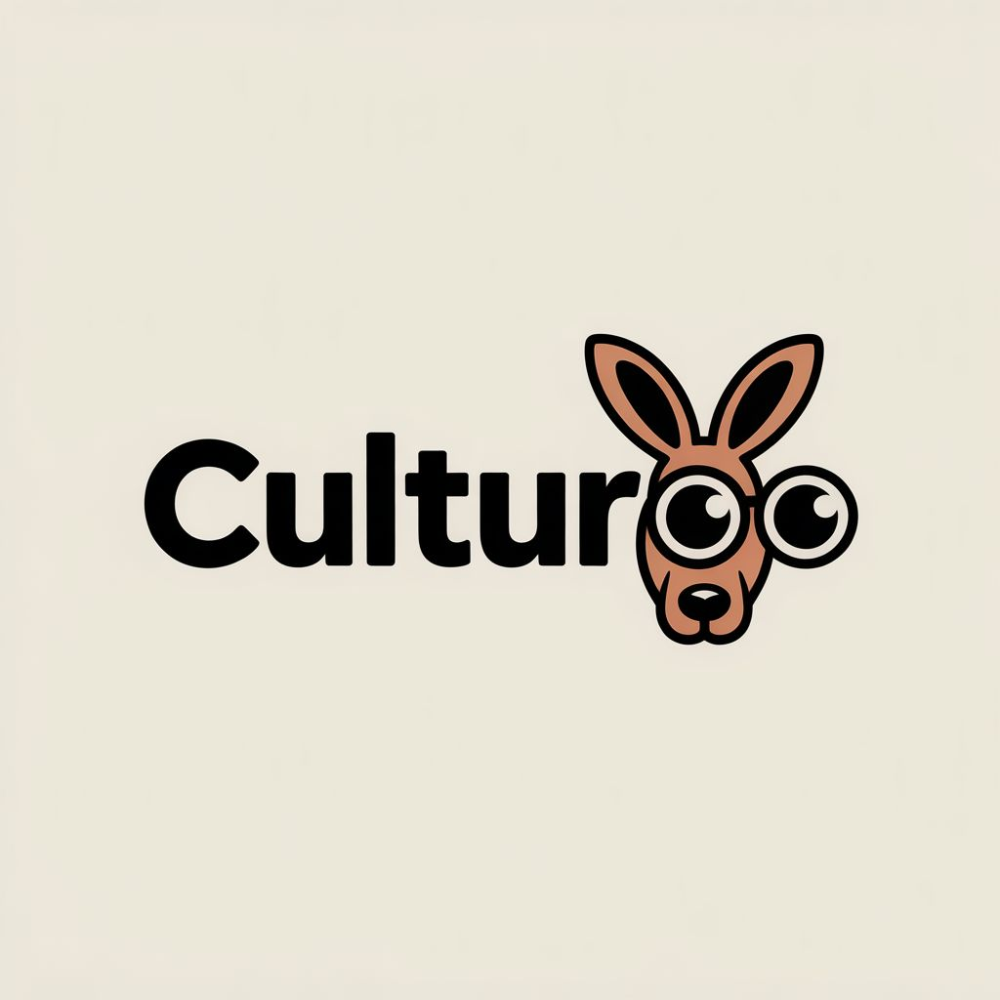

Back to work
Narrative Audio
Culturoo
Podcast and audio storytelling for immersive sightseeing experiences, combining narration, music, ambience and sound design.

3 selected audio pieces · Scroll to listen
Selected Audio